Overview
rayimage is an open source R package for image manipulation and simulated camera effects. rayfocus uses convolution-based techniques to generate simulated camera bokeh, depth of field, and other camera effects, using an image and an optional depth map. It includes functions to perform 2D convolutions, add image overlays, generate camera vignette effects, and add titles to images.
Installation
# To install the latest version from Github:
# install.packages("remotes")
remotes::install_github("tylermorganwall/rayimage")Functions
render_bokeh()takes two images as an input: an in-focus image, and a depth map for that image. These can either be in-memory representations of the image, or file paths to the images. The user can also specify various camera settings, including: focal length, f-stop, aperture shape (including custom aperture shapes passed by the user), aperture rotation, bokeh intensity, bokeh intensity limit. The output is either plotted to the current device, or save to a file (if a filename is passed to the function).render_convolution()/render_convolution_fft()performs a convolution with a user-supplied kernel (either custom, or using one of the built-in functions to generate a kernel:generate_2d_gaussian(),generate_2d_exponential(), andgenerate_2d_disk()). This function can be applied to either images represented by RGB arrays/file-names, or 2D matrices.render_resized()resizes an image or a matrix using a magnification factor or the dimensions of the desired object. This function interpolates between points using bilinear interpolation.render_reorient()reorients an image, either flipping horizontally, vertically, or with a transpose operation.render_text_image()generates a tightly bounded image containing text, with custom font support and emoji support if theraggpackage is installed.render_title()adds titles to images, with an optional title bar. User can specify opacity, color, and font properties.render_vignette()adds a camera vignette effect, which is a slight darkening by the edges of an image.render_image_overlay()adds overlays to images.plot_image()plots an RGB array to the current device.plot_image_grid()plots a list of RGB arrays in a user-specified grid to the current device.
Usage
The package comes with a sample image and depth map derived from Stanford “Chinese Dragon” 3D model. The image is included in rayimage as dragon and the depthmap is dragondepth. We plot these 3D image arrays simply by calling plot_image().
library(rayimage)
library(grid)
plot_image(dragon)
plot_image(dragondepth/2000)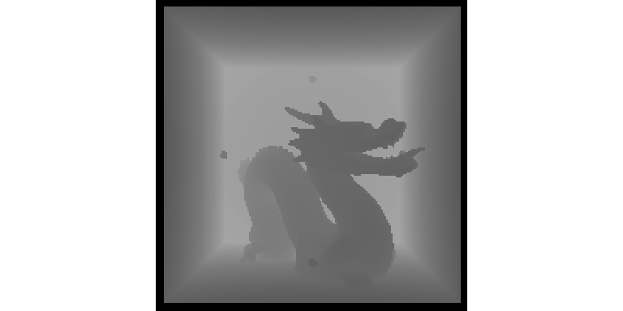
You can also easily plot a grid of images.
plot_image_grid(list(dragon, dragondepth/2000),
dim = c(2,1))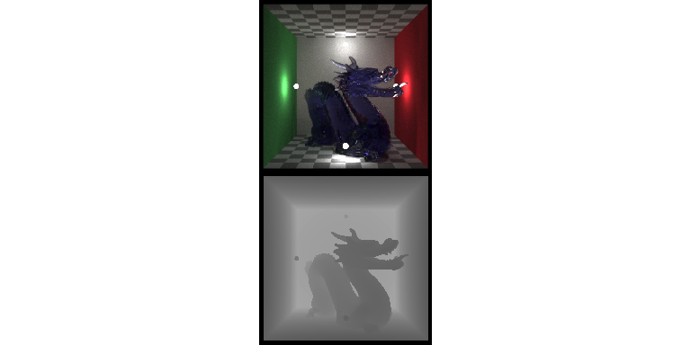
Preview the focal plane.
render_bokeh(dragon,dragondepth,focus=930,preview_focus = TRUE)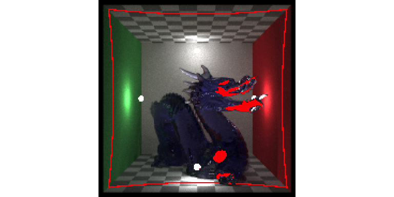
render_bokeh(dragon,dragondepth,focus=930,focallength=250)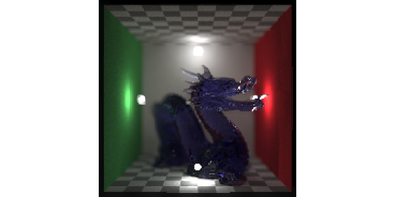
render_bokeh(dragon,dragondepth,focus=1300,preview_focus = TRUE)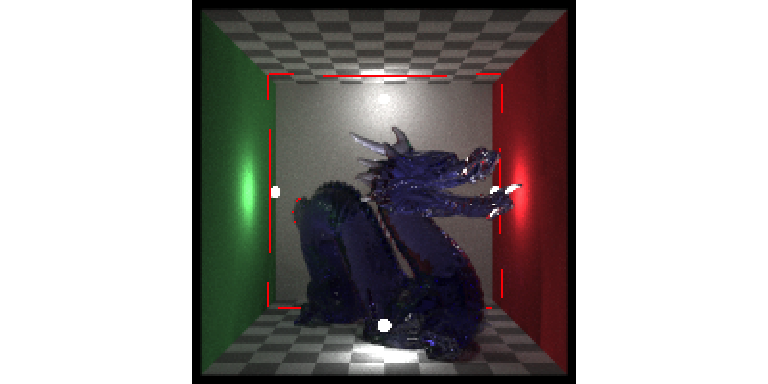
render_bokeh(dragon,dragondepth,focus=1300,focallength=250)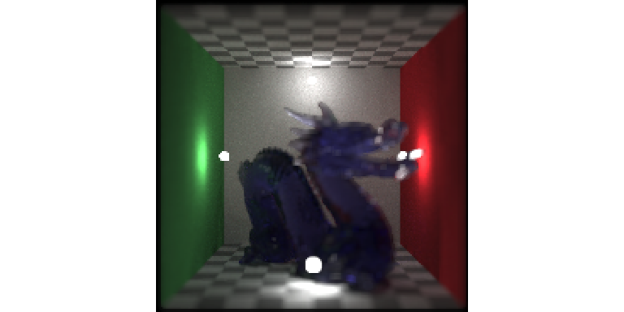
We can also adjust the focal point, shape of the aperture, f-stop, focal length, as well as the bokeh intensity.
image_list = list()
image_list[[1]] = render_bokeh(dragon,dragondepth,focus=1100,focallength = 400,
bokehshape = "hex", bokehintensity = 1, preview = FALSE)
image_list[[2]] = render_bokeh(dragon,dragondepth,focus=900,focallength = 400,
bokehshape = "hex", bokehintensity = 1, preview = FALSE)
image_list[[3]] = render_bokeh(dragon,dragondepth,focus=900,focallength = 400,
fstop = 16, bokehshape = "hex", preview = FALSE)
image_list[[4]] = render_bokeh(dragon,dragondepth,focus=900,focallength = 300,
bokehshape = "hex", bokehintensity = 5, preview = FALSE)
plot_image_grid(image_list, dim = c(2,2))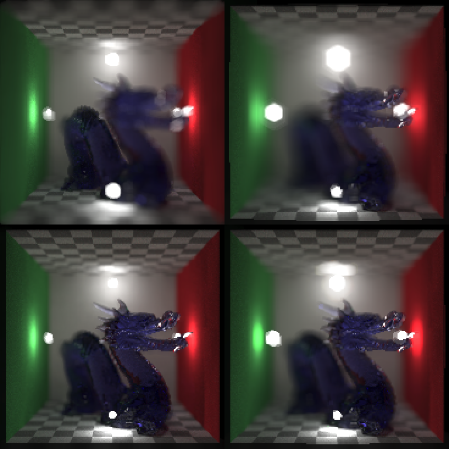
We can add a camera vignette effect, titles, and add overlays (not shown here):
image1 = dragon |>
render_title("Dragon", title_size = 20, title_bar_color = "red",
title_bar_alpha=0.8, title_color="white", title_offset = c(12,12))
image2 = dragon |>
render_vignette(vignette=0.8)
plot_image_grid(list(image1,image2), dim = c(2,1))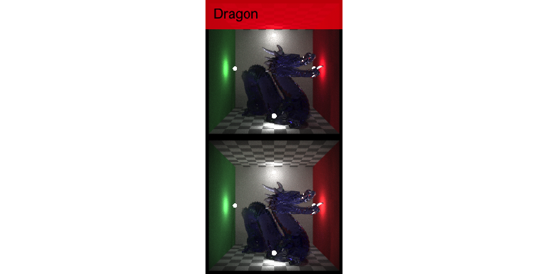
We can generate images with custom fonts and emojis:
#Use a custom font.
render_text_image("AVATAR", font = "Papyrus", size=100,
color = "#aaddff",
background_color = "black",
preview = TRUE)
#Plot an emoji with the agg device and increase resolution.
render_text_image("üòÄüöÄ", size = 500,
background_alpha = 0,
preview = TRUE)We can also resize images and matrices with render_resize(). We can do this before adding text to make the resulting text smoother.
#Double the input size to make the resulting text smoother.
image3 = dragon |>
render_resized(mag = 2) |>
render_title("Dragon", title_size = 20, title_bar_color = "red",
title_bar_alpha=0.8, title_color="white", title_offset = c(12,12))
#Specify resulting dimensions directly.
image4 = dragon |>
render_resized(dim = c(600,300)) |>
render_title("Dragon", title_size = 20, title_bar_color = "red",
title_bar_alpha=0.8, title_color="white", title_offset = c(12,12))
plot_image_grid(list(image3,image4), dim = c(2,1))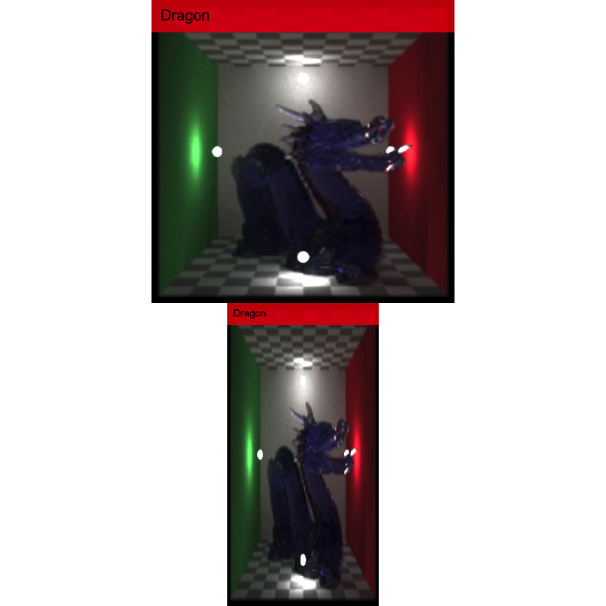
Reorienting images and matrices can be done with render_reorient():
render_reorient(dragon, preview = TRUE)
render_reorient(dragon, flipx = TRUE, preview = TRUE)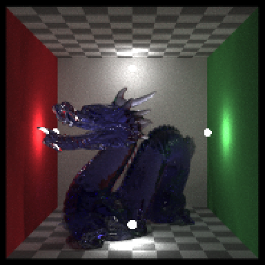
render_reorient(dragon, flipy = TRUE, preview = TRUE)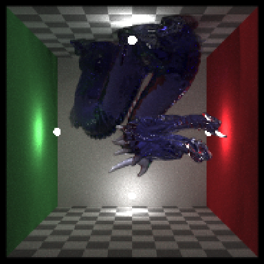
render_reorient(dragon, transpose = TRUE, preview = TRUE)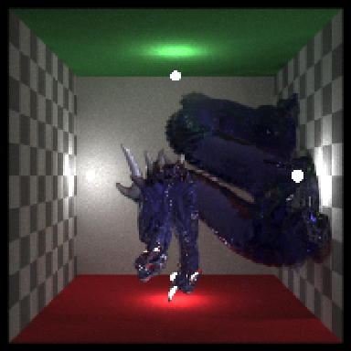
We can also use the render_convolution() directly to perform a convolution with a user-defined (or built-in) kernel.
#Default gaussian kernel
plot_image_grid(list(render_convolution(dragon, kernel = "gaussian"),
generate_2d_gaussian(1,1,11,3, rescale_unity = TRUE)),
dim = c(2,1))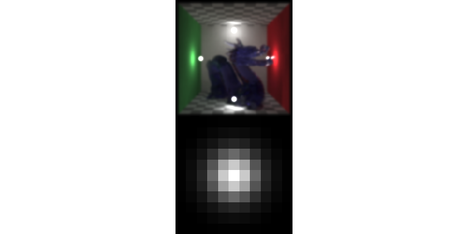
#Custom gaussian kernel
plot_image_grid(list(render_convolution(dragon, kernel = generate_2d_gaussian(10,1,31,21)),
generate_2d_gaussian(10,1,31,21, rescale_unity = TRUE)),
dim = c(2,1))
#Custom exponential kernel
plot_image_grid(list(render_convolution(dragon, kernel = generate_2d_exponential(3,31,21)),
generate_2d_exponential(3,31,21, rescale_unity = TRUE)),
dim = c(2,1))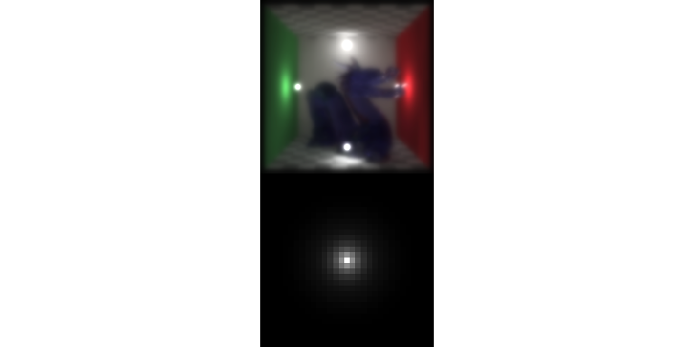
#Custom disk kernel
plot_image_grid(list(render_convolution(dragon, kernel = generate_2d_disk(31)),
generate_2d_disk(31, rescale_unity = TRUE)),
dim = c(2,1))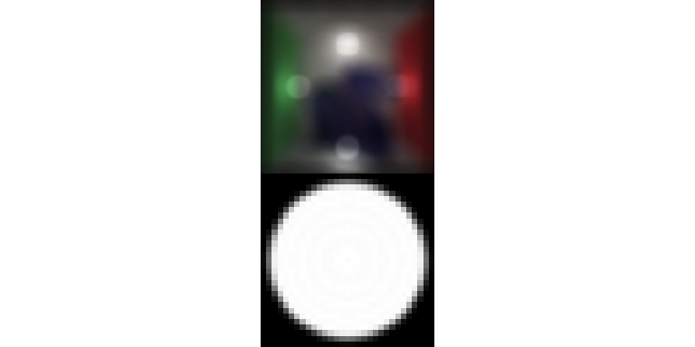
We can also use this to perform generate discrete 2D convolutions with matrices:
par(mfrow = c(1,2))
volcano |> image()
volcano |>
render_convolution(kernel=generate_2d_gaussian(sd=1,dim=31)) |>
image()
And here we use a user-defined kernel, in the shape of a cross.
custom1 = matrix(0, nrow=11,ncol=11)
custom1[6,] = 1
custom1[,6] = 1
custom2 = diag(10) + (diag(10)[,10:1])
plot_image_grid(list(custom1,custom2,
render_convolution(dragon, kernel = custom1),
render_convolution(dragon, kernel = custom2)),
dim = c(2,2))